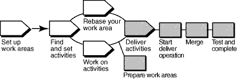

Terminology
A ClearCase Unified Change Management (UCM) activity differs from-and is not to be confused with-the RUP concept of an
task.
Overview
The following diagram illustrates the UCM workflow. Shaded areas are discussed in this tool mentor.

In ClearCase's UCM model, modifications to sources are captured in the form of UCM activities. An activity is
made up of a change set, which identifies all versions created while working on a task, and a descriptive headline.
To make work from your isolated work area available to the project team, you deliver versions associated with your UCM
activities from your development stream to the project's integration stream.
ClearCase merges the file and directory versions you deliver from your development stream with versions in the
integration stream as needed. However, the changes you deliver are not made permanent at this point, which allows
you to test the changes you've delivered with other work in the integration stream. After testing, you can cancel the
deliver operation or complete the deliver operation, making the deliver results permanent.
This tool mentor is applicable when running Microsoft Windows.
Using the ClearCase UCM deliver operation consists of these tasks:
-
Prepare your work areas
-
Start the deliver operation
-
Merge files
-
Test and build your work
-
Complete the deliver operation
Before beginning a deliver operation, you need to prepare your work areas by performing these tasks:
-
Use the UCM rebase operation to check that your development work area has been updated to use the most recent
recommended baselines for your project.
-
-
To start the rebase operation, from the Windows task bar, click Start > Programs > Rational
Software > Rational ClearCase > ClearCase Explorer.
-
In ClearCase Explorer, right-click the root directory of your development view and click Rebase
Stream.
-
Follow the steps from the Rebase Stream Wizard.
-
Work must be checked in before it can be delivered. Use the ClearCase Find Checkouts utility to find any
checked-out versions.
-
-
To start the Find Checkouts utility from ClearCase Explorer, go to the Folder pane and
right-click the folder you want to search. Select Find Checkouts from the pop-up menu.
-
A list of checked-out elements is displayed. Select the elements you want to check in and right-click.
Click Check In from the pop-up menu.
If your development view is a snapshot view, you must also perform an update operation for it.
After preparing your work areas, you're ready to start the deliver operation, which is where ClearCase integrates the
changes from your development work area to the integration work area. Files are checked out to your integration view.
To start a deliver operation, go to ClearCase Explorer and right-click on the root directory of your development view.
Click Deliver from Stream from the pop-up menu.
ClearCase merges the work in your development stream with the work in the integration stream. It completes trivial
merges for you and, if merge conflicts are encountered, the ClearCase DiffMerge utility prompts you to resolve the
conflicts.
To make sure your delivered work is compatible with the work in the integration stream, update your integration view,
which reflects merge results from the previous step, and build and test the files there.
In addition to building and testing, you may need to do the following:
-
Edit the checked out versions to resolve build errors.
-
Check out and edit additional files.
See Tool Mentor: Updating Your Project Work Area Using Rational
ClearCase.
When you're satisfied that your changes are compatible with the latest work for the project, complete the deliver
operation from the development view in which it was started. You also have the option of canceling the operation at
this point. This step checks in the files that result from the merge operation and completes other housekeeping tasks.
 See the Developing
Software online help for detailed information on each step. See the Developing
Software online help for detailed information on each step.
|